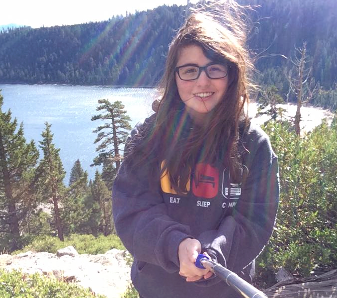
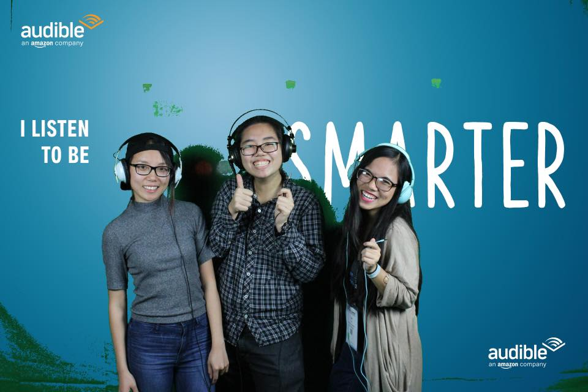
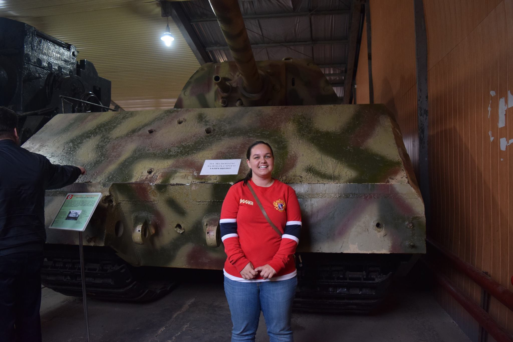
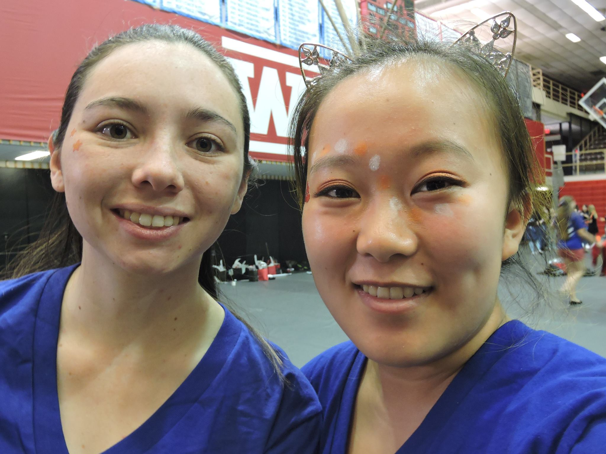

To get on the general mailing list or if you want to get involved with planning, contact the officers. wics-exec@wpi.edu
In Person
Come to the WiCS Lounge in Fuller, there is usually some one in there. Fuller Labs 145. We have an amazing mural on the windows facing the common space, courtsey of We Art Good.
Come to our events!
Come to our events, they're open to everyone! Check the calender for upcoming events, we have a major event per term.
The Officers
|  |
Webmaster: Aura Velarde
Hello! I'm Aura, and I'm a junior double majoring in Computer Science and IMGD Tech. I hope to go to graduate school in London after graduating from WPI. I really enjoy cats, knitting, and singing. I never thought I'd become a part of Greek life but I'm really happy that I found Alpha Gam. Alpha Gam has helped me develop confidence in my leadership skills and has introduced me to lifelong friends. |
|---|---|
|  |
Vice President: Quyen Hoang
Hello! I'm Quyen, and I'm a junior double majoring in Computer Science and IMGD Tech. I hope to go to graduate school in London after graduating from WPI. I really enjoy cats, knitting, and singing. I never thought I'd become a part of Greek life but I'm really happy that I found Alpha Gam. Alpha Gam has helped me develop confidence in my leadership skills and has introduced me to lifelong friends. |
|  |
Events Coordinator: Brianna Greenlaw
Hello! I'm Quyen, and I'm a junior double majoring in Computer Science and IMGD Tech. I hope to go to graduate school in London after graduating from WPI. I really enjoy cats, knitting, and singing. I never thought I'd become a part of Greek life but I'm really happy that I found Alpha Gam. Alpha Gam has helped me develop confidence in my leadership skills and has introduced me to lifelong friends. |
|  |
Design Coordinator: Emily Hao
Hello! I'm Quyen, and I'm a junior double majoring in Computer Science and IMGD Tech. I hope to go to graduate school in London after graduating from WPI. I really enjoy cats, knitting, and singing. I never thought I'd become a part of Greek life but I'm really happy that I found Alpha Gam. Alpha Gam has helped me develop confidence in my leadership skills and has introduced me to lifelong friends. |
- President: Hope Wallace
- Vice President: Quyen Hoang
- Events Coordinator: Brianna Greenlaw
- Webmaster: Aura Velarde
- Design Coordinator: Emily Hao
- Treasurer: Ilana Zeldin
- Advisor: Kathi Fisler